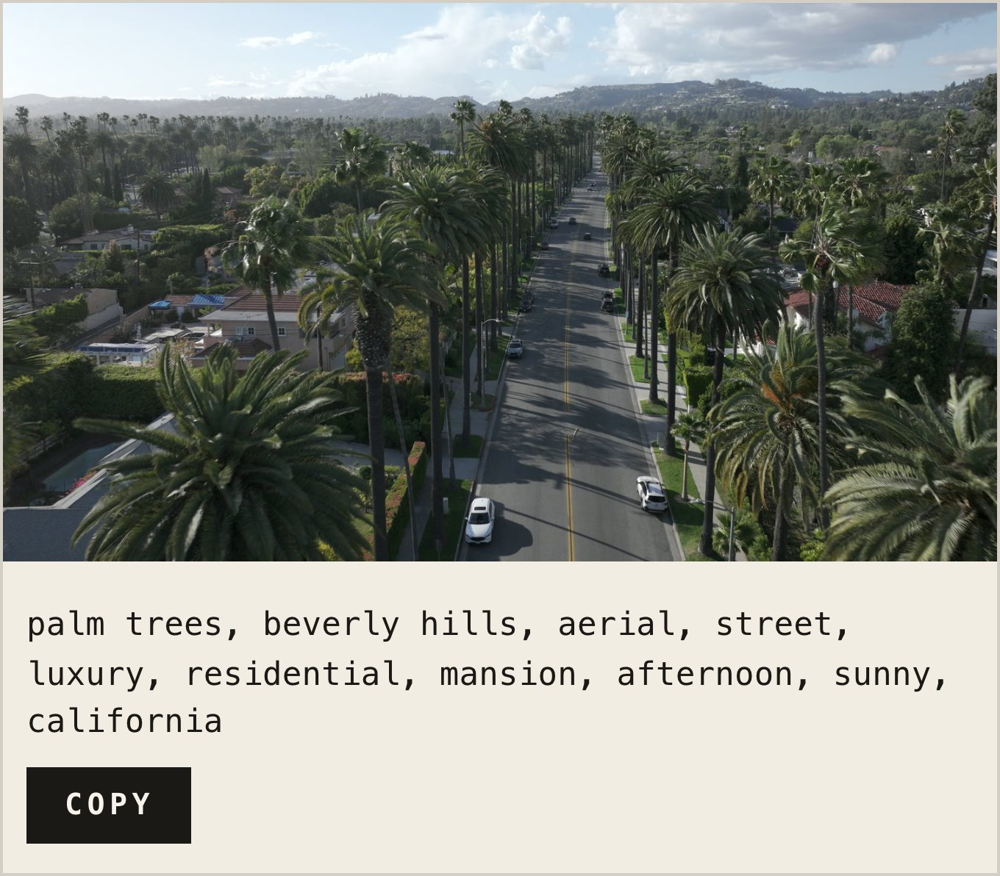

Stock Shredder · Getting started
A Stock Footage Workflow, From Shoot to Upload
Eight steps take a shoot to clips for sale. Most of them are quick. One of them eats the week.

The short version
- Plan the shoot around what buyers search for.
- Shoot steady, clean takes with room to trim.
- Offload and back up the same day.
- Sort what you can sell from what you can't.
- Cut long takes into short clips, grade, export, then keyword and upload.
Steps 5 and 6 are where the hours go. Stock Shredder cuts, grades and exports 1,000 clips in 3 hours 1 minute in our test.
The eight steps at a glance.
Every stock shooter runs some version of the same process. The order matters, because a mistake early (a missing release, a log clip exported without a grade) costs you a rejection later.
- Plan what to shoot and pack for it.
- Shoot for stock, not for a story.
- Offload cards and back up.
- Sort the footage: sell, editorial only, skip.
- Clip long takes into short moments.
- Grade and export each clip as its own file.
- Title and keyword every clip.
- Upload, read the rejections, repeat.
Steps 1 to 4 take minutes per shoot once you have a routine. Steps 5 and 6 take hours. That's the part this guide spends the most time on.
Step 1: plan the shoot.
Pick subjects buyers already search for: everyday life, work, food, nature, cities, seasons. Then plan the shots: wide, medium and close on each subject, with a few seconds of clean action in each.
Pack the same way every time so nothing is missing on location. Our camera gear checklist covers the kit, and the two-minute gear check makes sure it all comes home.
Step 2: shoot for stock.
- Hold each shot. Roll 15 to 30 seconds so there's a clean moment to trim from.
- Keep it steady. Shaky clips get rejected. Use a tripod, a gimbal or a slow move.
- Watch for logos and faces. Brands need to be out of frame. Recognizable people need a model release.
- Stay in one frame rate. Mixed frame rates in one batch are easy to get wrong at export.
Step 3: offload and back up.
Copy every card to two drives before you format it. Name the folder by date and place so you can find the shoot again in a year. This is also the folder you'll point your clip tool at in step 5.
Step 4: sort what you can sell.
Go through the shoot once and split it into three piles: sell commercially, editorial only (news-style use, no releases), and skip. Client work needs a rights check first. Our old footage archive guide walks through the rights questions.
Steps 5 and 6: clip, grade and export, by hand.
This is where most workflows stall. By hand, every clip means:
- Scrub the file to find the usable seconds.
- Set in and out inside the site's length limits.
- Grade log footage to a clean Rec 709.
- Export it as its own file.
- Rename it so it can be found again.
Our average is about 2 minutes per clip. A drive of 500 clips is more than 16 hours of editing, and that's before keywords.
Steps 5 and 6, the Stock Shredder way.
Point Stock Shredder at the folder from step 3 on your Mac or Windows computer, set the clip length, and let it run.

- It finds and trims. Usable moments come out of long takes as clips inside the length you set.
- It filters. Broken, empty and too-shaky clips are set aside for you.
- It checks. Logos, HDR, wrong frame rates and footage below HD are flagged before you upload.
- It grades and exports. Built-in Looks for ARRI, DJI, RED and Sony, or your own LUT. Each clip its own file, named and in its own folder.
You review the results and approve or deny each clip. Shooting Sony log? See Sony FX3 and FX6 footage to stock clips.
The time difference, measured.
Real Sony FX6 and FX3 footage on a MacBook Pro M3 Pro, exported to an external SSD as graded ProRes 422 HQ 4K.
100 clips
500 clips
1,000 clips
Stock Shredder time is shred plus export. Review time not included. By hand: 2 minutes per clip average.
Step 7: check, title and keyword.
Before anything goes up, check each clip against the site's rules. The free stock clip spec checker compares one clip against Adobe Stock, Pond5 and Shutterstock, and the full list is in stock footage requirements for Adobe, Pond5 and Shutterstock.
Then write a title and keywords for every clip. On Pro and Studio, Stock Shredder writes a title, a description and keywords for each exported clip, and you check them before upload.

Writing your own? Run them through the free title and keyword checker first.
Step 8: upload and repeat.
Upload to each site, then fill in the metadata. Stock Shredder saves upload sheets for Pond5, Adobe Stock and Shutterstock on Pro and Studio, and can send clips straight to Shutterstock and Pond5. Already have one sheet? The free upload sheet converter turns it into each site's format.
Read every rejection, fix the cause in your workflow, and run the next drive. Site-by-site steps: Adobe Stock, Pond5 and Shutterstock.
What to know before you start.
Stock Shredder handles the repetitive parts. A few things stay with you.
- You plan and shoot. What you film decides what sells.
- You review. It finds the usable shots. Your eye picks the keepers.
- You own the rights check. Releases and client contracts are yours to confirm.
- The slowest step gets fast. With clipping and export handled, a full drive fits in an afternoon.
When by hand still makes sense.
- You're uploading a handful of hero clips, each with a custom edit.
- Your footage is already cut into short clips and only needs keywords.
Once a shoot turns into hundreds of clips, steps 5 and 6 decide how much of it ever gets online. That is the part worth handing off. For the money side, read how to make money selling stock footage.
FAQ
What is a stock footage workflow?
The steps that take footage from the shoot to clips on stock sites: plan, shoot, offload and back up, sort, cut into clips, grade and export, title and keyword, upload. Doing them the same way every time is what keeps a portfolio growing.
Which step takes the longest?
Cutting long takes into clips and exporting them. By hand that's about 2 minutes per clip in our tests, so a 500-clip drive is more than 16 hours of work before you write a single keyword.
Should I grade stock footage?
Log footage should go out as a clean, natural Rec 709 grade. Buyers want to drop the clip into their edit. Keep the grade neutral and leave the creative look to them.
How long should stock clips be?
Each site sets its own limits, and short clips of one moment sell best. Check each site's current rules before you export: stock footage requirements for Adobe, Pond5 and Shutterstock are in our guide.
Can I upload the same clip to several sites?
Yes, if you stay non-exclusive. Exclusive deals pay more per sale on some sites but lock the clip to one place. Read each site's terms before you choose.
Do I need to keyword every clip?
Yes. Buyers find clips by search, so every clip needs a clear title and relevant keywords. Stock Shredder writes them on Pro and Studio, and you check them before upload.